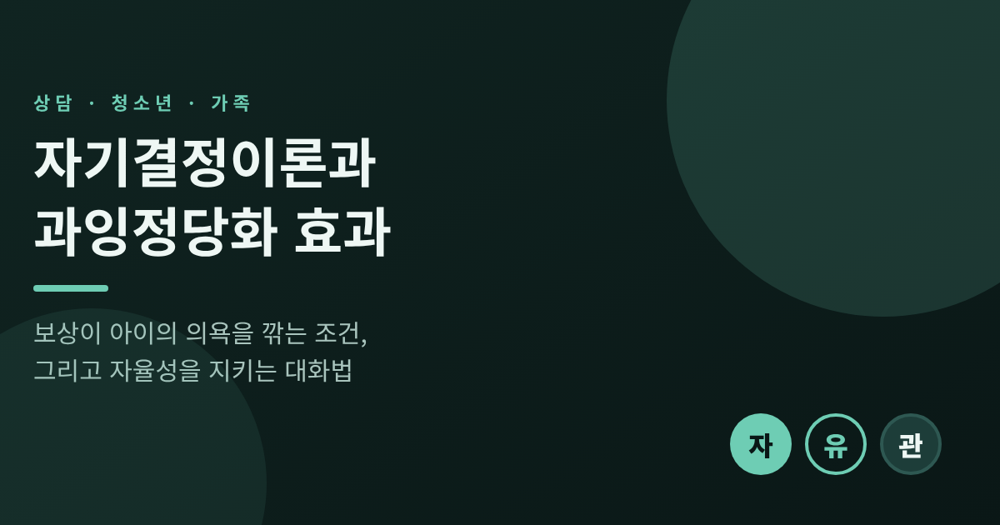
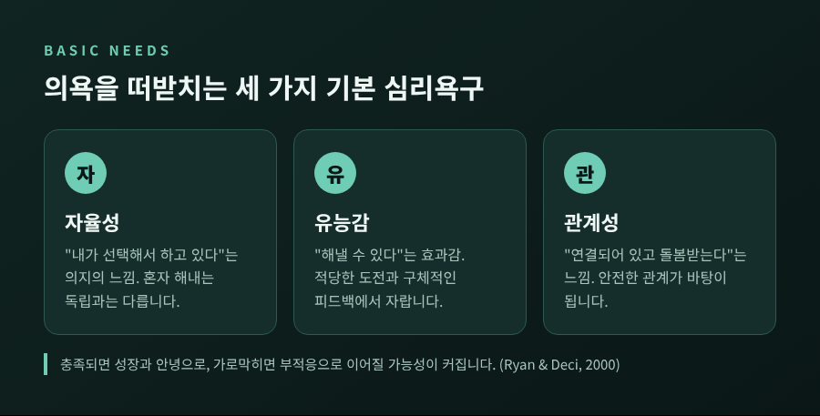
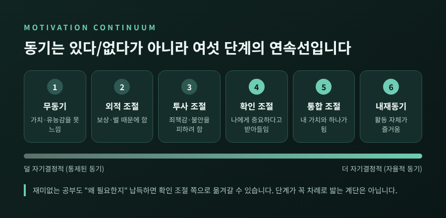
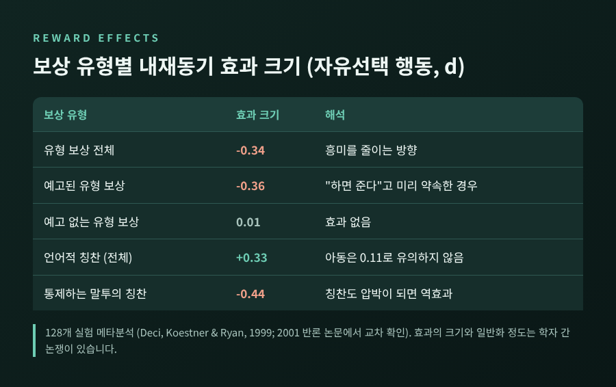
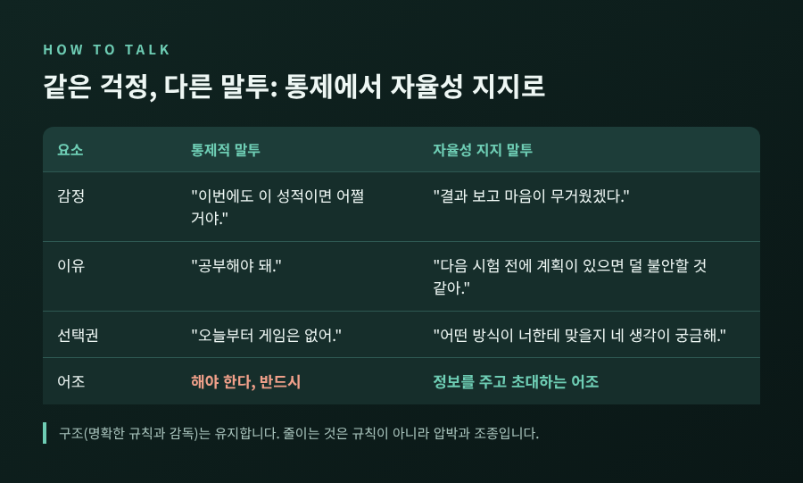
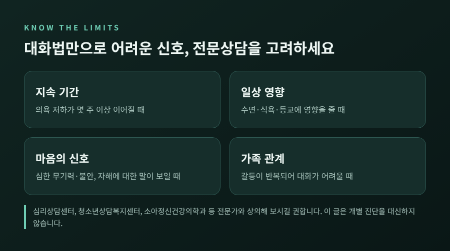

오늘은 자기결정이론(SDT)의 관점에서, 보상이 아이와 청소년의 동기를 오히려 떨어뜨리는 경우를 정리해 보려 합니다.
결론부터 말씀드리면 보상 자체가 문제라기보다 "어떤 활동에, 어떤 방식으로 주는가"가 문제입니다.
뒤이어 부모와 교사가 일상에서 쓸 수 있는 말투와, 그 말투가 해결하지 못하는 영역까지 함께 짚겠습니다.
자기결정이론은 에드워드 데시와 리처드 라이언이 발전시킨 동기 이론입니다.
사람에게는 세 가지 기본 심리욕구가 있다고 봅니다.
자율성, 유능감, 관계성입니다.
자율성은 "내가 선택해서 하고 있다"는 의지의 느낌입니다. 독립하거나 혼자 해내는 것과는 다릅니다.
유능감은 "해낼 수 있다"는 효과감이고, 관계성은 "연결되어 있고 돌봄받고 있다"는 느낌입니다.
이 욕구가 채워지면 성장과 안녕으로, 가로막히면 부적응으로 이어질 가능성이 커진다고 이론은 설명합니다.

한 가지 짚어둘 점이 있습니다.
저자들은 관계성이 내재동기에 미치는 역할이 자율성이나 유능감만큼 단단히 확립되지는 않았다고 스스로 밝힙니다.
세 욕구를 똑같은 무게로 외우기보다, 아이의 상황에서 어느 욕구가 막혀 있는지를 살피는 도구로 쓰시길 권합니다.
흔히 동기를 "있다/없다"로 나눕니다. 이론은 그 사이를 여섯 단계로 나눕니다.
무동기, 외적 조절, 투사 조절, 확인 조절, 통합 조절, 내재동기입니다.
외적 조절은 보상이나 벌 때문에 움직이는 상태입니다.
투사 조절은 죄책감이나 불안을 피하려고, 혹은 자존심을 지키려고 움직이는 상태입니다.
확인 조절에 이르면 "이건 나에게 중요하다"고 스스로 받아들인 채 움직입니다.
이 단계들이 반드시 차례대로 밟아야 하는 계단은 아닙니다.
중요한 대목은 재미없는 공부조차 "왜 필요한지"를 스스로 납득하면 확인 조절 쪽으로 옮겨갈 수 있다는 점입니다.
그 이동에는 자율성·유능감·관계성의 지지가 필요하고, 특히 통합 단계에는 자율성이 빠질 수 없다고 합니다.

과잉정당화 효과는 이미 즐기던 활동에 예고된 외적 보상이 붙으면, 흥미가 줄어드는 현상입니다.
대표 실험이 1973년 레퍼, 그린, 니스벳의 연구입니다.
평소 마커로 그림 그리기를 좋아하던 유아원 아이들이 대상이었습니다.
한 집단에는 "잘 그리면 상장을 준다"고 미리 알렸습니다.
다른 집단에는 예고 없이 같은 상장을 주었고, 세 번째 집단에는 아무 보상도 없었습니다.
한두 주 뒤 자유놀이 시간에 관찰하니, 상장을 예고받은 집단에서만 자발적인 그림 그리기가 눈에 띄게 줄었습니다.
총 51명 규모였던 것으로 전해집니다. 다만 이 수치는 2차 자료에서 확인한 것입니다.
해석은 이렇습니다.
예전엔 "그리는 게 재미있어서" 그렸습니다. 이제는 "상을 받으려고" 그린 것이 됩니다.
보상이 행동의 이유를 바꿔 놓은 셈입니다.
인지평가이론으로 보면, 보상이 통제로 느껴지면서 자율성이 줄어든 것입니다.
1999년 데시, 코스트너, 라이언은 128개 실험을 모아 메타분석을 내놓았습니다.
결과를 몇 가지로 정리하면 이렇습니다.

여기서 숫자를 그대로 받아들이기 전에 알아둘 점이 있습니다.
캐머런 연구진은 보상이 대체로 동기에 해롭지 않으며, 저흥미 과제에서는 오히려 높인다고 반박했습니다.
부정적 효과는 유형적이고 예고되었으며 수행과 느슨하게 연결된 보상에서 주로 나타난다는 입장입니다.
라이스는 이른바 과소화 효과가 "입증되지 않았다"는 비판도 제기했습니다.
데시 연구진은 이에 맞서 캐머런 쪽 분석이 이상치를 과하게 제거하고 서로 다른 과제를 합쳤다고 재반박했습니다.
양쪽이 합의하는 지점은 있습니다.
효과는 모든 상황에서 나타나지 않고, 조건에 달려 있다는 것입니다.
이미 좋아하는 활동일수록, 보상이 예고될수록, 아이일수록 위험이 커집니다.
지루한 과제에서는 보상이 흥미를 깎지도 높이지도 않았습니다.
그러니 "보상은 무조건 해롭다"는 문장은 근거보다 앞서 나간 말입니다.
자기결정이론이 말하는 좋은 양육은 참여, 구조, 자율성 지지 세 가지입니다.
여기서 오해하기 쉬운 부분이 있습니다. 자율성 지지는 규칙과 한계를 없애자는 뜻이 아닙니다.
이론의 공식 설명도 "구조는 필요하다"고 분명히 말합니다.
통제와 구조는 다릅니다.
구조는 명확한 규칙과 감독이고, 통제는 압박하고 조종하는 방식입니다.
죄책감을 건드리거나 수치심을 주거나 애정을 거두는 말이 통제에 해당합니다.
일반화된 가상 사례를 하나 들어 보겠습니다.
중학교 2학년 아이가 시험을 망치고 돌아왔습니다. 부모는 걱정이 앞섭니다.
"이번에도 이 성적이면 어쩔 거야. 오늘부터 게임은 없어. 공부해야 돼."
이 말에는 압박 언어와 조건이 가득합니다.
같은 걱정을 이렇게 바꿀 수 있습니다.
"결과를 보고 마음이 무거웠겠다. 네가 보기엔 뭐가 제일 걸렸니?"
"다음 시험 전에 계획을 같이 짜 볼까. 어떤 방식이 너한테 맞을지 네 생각이 궁금해."

바뀐 말에는 네 가지가 들어 있습니다.
아이의 감정을 줄이지 않고 인정합니다.
요구에는 이유를 붙입니다.
방법에는 선택권을 줍니다.
"해야 한다" 대신 정보를 주는 어조를 씁니다.
연구에서는 이런 태도가 어떤 차이를 보일까요.
36편을 모은 2016년 메타분석(바스케스 외)에서 부모의 자율성 지지는 아이의 심리적 건강과 상관이 약 .36~.38로 가장 컸습니다.
자율적 동기와는 약 .20, 학업성취와는 약 .11~.12였습니다.
건강과는 비교적 뚜렷하지만 성적과의 연결은 약한 편입니다.
모두 상관 연구라서, 자율성을 지지하면 그렇게 된다고 인과로 읽을 수는 없습니다.
한국 고등학생 137명에게 가상 상황을 제시한 2018년 연구도 있습니다.
성적이 낮아 엄마가 더 공부하라고 말하는 장면을 두 가지 말투로 보여 주었습니다.
자율성 지지형에서는 자율성 만족이 3.27 대 2.44로 높았고, 자율성 좌절은 2.62 대 3.45로 낮았습니다.
다만 협상이나 반항 같은 실제 반응은 말투만으로 달라지지 않았습니다.
교실에서의 자율성 지지는 관점 취하기에서 시작합니다.
학생이 수업을 어떻게 보는지 열린 질문으로 먼저 묻는 것입니다.
그다음 흥미를 살리는 선택과 적절한 도전을 주고, 재미없는 과제에는 이유를 설명합니다.
"이렇게 해 보면 어떨까요" 같은 초대형 표현도 자주 권장됩니다.
피해야 할 행동으로는 소리 지르기, 위협, 매수, 처벌, 수치심 주기 등이 꼽힙니다.
교사 28명, 학생 1,566명을 대상으로 한 한국 중학교 체육 연구에서는 8시간 워크숍이 이런 변화를 이끌었습니다.
다만 교사 표본이 작고 학생 보고에만 의존했으며 일부 가설은 지지되지 않았습니다.
보상에 관한 실천 원칙은 이렇게 요약됩니다.
세 가지를 솔직히 인정하겠습니다.
첫째, 자율성 지지가 양육의 만능 열쇠는 아닙니다.
앞서 본 연구들은 대부분 상관·단면 연구이고, 가상 상황이나 자기보고에 기대고 있습니다.
둘째, 부모도 지칩니다.
공식 설명도 스트레스와 완벽주의, 아이의 어려운 행동이 부모의 여유를 갉아먹어 통제적 반응을 부를 수 있다고 인정합니다.
언제나 욕구를 지지하는 부모는 없고, 실수한 뒤에는 자신에게 너그러워지라고 권합니다.
셋째, 말투를 바꾸는 것만으로 풀리지 않는 영역이 있습니다.

의욕 저하가 몇 주 이상 이어지고 수면·식욕·등교에 영향을 주는 경우가 그렇습니다.
무기력, 불안, 자해에 대한 말이 보이거나 가족 갈등이 반복되는 경우도 마찬가지입니다.
이럴 때는 의지나 말투의 문제로 단정하지 마시고, 심리상담센터나 청소년상담복지센터, 소아정신건강의학과 같은 전문가의 도움을 받아 보시길 권합니다.
이 글은 일반적인 정보이며 개별 진단이나 치료를 대신할 수 없습니다.
정리하면 이렇습니다.
보상은 주느냐 마느냐보다 주는 방식이 중요하고, 말투는 아이가 "내가 고른 일"이라고 느끼게 하는 쪽으로 기울어야 합니다.
"아이의 동기는 밀어서 생기지 않고, 스스로 고른다는 느낌 위에서 자랍니다."
예전에는 의욕을 만들어 주는 것이 부모의 일이라고 생각했습니다.
지금은 의욕이 자랄 자리를 지켜 주는 것이 먼저라고 생각합니다.
오늘 저녁, 아이에게 할 첫마디를 "해야지"에서 "어떻게 하고 싶니"로 바꿔 보신다면 무엇이 달라질까요.